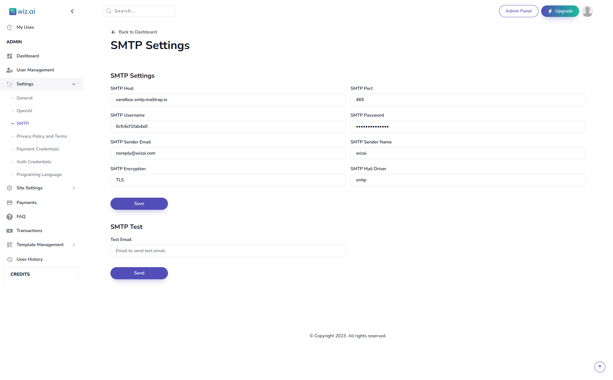

Introducing WizAI: Your Ultimate AI-Powered SaaS Platform (Ai Content Writing,Ai Image Generation,Ai Translation, Ai Code Generation)
Thank you so much for purchasing WizAi item from themeforest.
- Version: 1.0
- Author: Itech soft
- Created: 13 October, 2023
- Update: 13 October, 2023
If you have any questions that are beyond the scope of this help file, Please feel free to email via Item Support Page.
Introduction
Please note: To fully unlock the capabilities of WizAI, you'll need to purchase OpenAI API credits. This will enable seamless integration with OpenAI's powerful AI models, taking your content creation and code generation to the next level.
Introducing WizAI: Your Cutting-Edge AI-Powered SaaS Platform Experience the future of content creation, code development, and translation services with WizAI, our innovative Software as a Service (SaaS) platform. WizAI is your solution for harnessing the incredible potential of artificial intelligence to meet the demands of today's digital world. WizAI is your all-in-one solution for AI code generation, AI content writing, AI translation, AI prompt image generation, and it even integrates with the OpenAI API for enhanced code generation. Simplify your work, save time, and unlock your full creative potential with WizAI. Explore the future of AI-powered innovation today!
Key Features:
AI Code Generation
WizAI simplifies the process of writing complex code by employing state-of-the-art artificial intelligence. Let the platform do the heavy lifting, leaving you with more time to focus on your project's unique aspects.
AI Content Writing
Say goodbye to writer's block and the time-consuming task of creating compelling content. WizAI generates high-quality, engaging content effortlessly.
AI Translation
Breaking language barriers has never been easier. WizAI's AI translation feature ensures your message is understood globally by offering translations that are both accurate and contextually relevant.
AI Prompt Image Generation
Need images that resonate with your content? WizAI can generate images based on your prompts, ensuring your visuals complement your text seamlessly.
AI Code Generation with OpenAI API
We have integrated OpenAI's powerful API to enhance your coding experience. WizAI streamlines the development process by leveraging the capabilities of OpenAI, making coding faster and more efficient.
Flexible Payment Options
Our platform supports PayPal, Stripe, and Google Pay, making transactions secure and convenient for both you and your customers.
Interactive Dashboards & Dynamic Pricing
WizAI features user-friendly dashboards for both administrators and users. Administrators can effortlessly enable or disable features, tailor pricing structures, and access insightful analytics, while users can enjoy a seamless and intuitive experience. We understand that your business may evolve over time. With WizAI, administrators can dynamically create pricing plans to suit changing needs and market demands, ensuring scalability and flexibility.
WizAI is not just a software but a solution to empower businesses and individuals to thrive in today's fast-paced digital landscape. Whether you are an entrepreneur, developer, content creator, or business owner, WizAI is the answer to your content and coding challenges.
With WizAI, you gain access to a powerful, innovative platform that combines the latest in AI technology with a user-centric design. Unleash your potential and experience a new era of content creation, code development, and translation services.
Get started with WizAI today and witness the future of AI-driven productivity. Elevate your projects and watch your efficiency soar with WizAI by your side. Your success begins here!
System Requirements
Minimum Hardware Requirements
- RAM: 1 GB (Gigabyte) or more.
- Storage: A minimum of 20 GB (Gigabytes) of available storage space.
Operating System
- Operating System: Ubuntu
Hosting Environment
- VPS Hosting: This application requires Virtual Private Server (VPS) hosting for deployment.
- Ubuntu: The VPS should run on an Ubuntu-based operating system.
Additional Notes
- Ensure that the VPS hosting provider offers the necessary resources as specified in the minimum hardware requirements.
- Make sure that your VPS is set up and configured with Ubuntu.
- Regularly monitor system resources to ensure optimal performance.
Installation
Here is a process for installation process from both backend and frontend
Wizai Frontend
First download the project from Codecanyon and cd into wizai-frontend
cd wizai-frontend- In the root directory
.env.exampleand make a new file into.envfile - Add your database credentials here in .env use your backend url in here
NEXT_PUBLIC_BASE_URL - Add your database credentials here in .env use your backend url in here
NEXT_PUBLIC_BASE_URLand inNEXT_PUBLIC_CLIENT_URLadd frontend url - The run the command
yarn install - Now build frontend project using this command
yarn build - Finally run the command to start the frontend server
yarn start
Wizai Backend
First download the project from Codecanyon and cd into wizai-backend
cd wizai-backend- In the root directory
.env.exampleand make a new file into.envfile - The run the command
yarn install - Add your database credentials here in env
DB_USERNAMEDB_PASSWORDDB_HOSTDB_PORT - Add your backend url here in
.envBACKEND_URL - The run the db command
yarn prisma:migrate - The run the seed command
yarn prisma:seed - Now build project using this command
yarn build - Finally run the command to start the server
yarn start:prod
Vercel Deployment
Here is a process for deploying WizAI to Vercel using GitHub.
Deploying Wizai Frontend to Vercel
To deploy the WizAI frontend to Vercel from your GitHub repository, follow these steps:
- Ensure your WizAI frontend project is hosted on a GitHub repository.
- Log in to your Vercel account or sign up if you don't have one.
- In Vercel, click on the "New Project" button.
- Choose your Git platform, in this case, select "GitHub." Authorize Vercel to access your GitHub account if prompted.
- Search for and select the repository containing your WizAI frontend.
- Configure your settings, such as branch and environment variables, as needed.
- Click the "Deploy" button. Vercel will automatically build and deploy your Next.js frontend from the linked GitHub repository.
Deploying Wizai Backend to Vercel
To deploy the WizAI backend to Vercel from your GitHub repository, follow these steps:
- Ensure your WizAI backend project is hosted on a GitHub repository.
- Log in to your Vercel account or sign up if you don't have one.
- In Vercel, click on the "New Project" button.
- Choose your Git platform, in this case, select "GitHub." Authorize Vercel to access your GitHub account if prompted.
- Search for and select the repository containing your WizAI backend.
- Configure your settings, such as branch and environment variables, as needed.
- Click the "Deploy" button. Vercel will automatically build and deploy your Nest.js backend from the linked GitHub repository.
VPS Installation
Here are the steps to set up your Virtual Private Server (VPS) for hosting the WizAI frontend and backend using Nginx and Tmux.
Prerequisites
Before starting the VPS installation, ensure that you have access to a VPS with the following minimum specifications:
- RAM: 1 GB (Gigabyte) or more.
- Storage: A minimum of 20 GB (Gigabytes) of available storage space.
- Operating System: Ubuntu-based operating system.
MySQL Installation
Install MySQL on your VPS by running the following commands:
sudo apt update
sudo apt install mysql-serverDuring the installation, you'll be prompted to set a root password for MySQL. Make sure to remember it for later use.
Node.js Installation
Install Node.js on your VPS using the following commands:
curl -fsSL https://deb.nodesource.com/setup_16.x | sudo -E bash -
sudo apt-get install -y nodejsVerify the Node.js installation with:
node -v
npm -vSetting Up Nginx
Install Nginx on your VPS:
sudo apt install nginxStart and enable Nginx:
sudo systemctl start nginx
sudo systemctl enable nginxCreate Nginx server blocks for both the frontend and backend. Replace /path/to/frontend
and
/path/to/backend with your actual project paths:
sudo nano /etc/nginx/sites-available/frontend
sudo nano /etc/nginx/sites-available/backendFor the frontend server block:
server {
listen 80;
server_name your-frontend-domain.com www.your-frontend-domain.com;
root /path/to/frontend;
location / {
try_files $uri /index.html;
}
}For the backend server block:
server {
listen 80;
server_name your-backend-domain.com www.your-backend-domain.com;
root /path/to/backend;
location / {
proxy_pass http://127.0.0.1:YOUR_BACKEND_PORT; # Replace YOUR_BACKEND_PORT
proxy_set_header Host $host;
proxy_set_header X-Real-IP $remote_addr;
}
}Enable the server blocks:
sudo ln -s /etc/nginx/sites-available/frontend /etc/nginx/sites-enabled/
sudo ln -s /etc/nginx/sites-available/backend /etc/nginx/sites-enabled/Test the Nginx configuration and reload it:
sudo nginx -t
sudo systemctl reload nginxTmux Installation
Install Tmux on your VPS:
sudo apt install tmuxYou can use Tmux to run your Node.js applications in the background, keeping them running even after you disconnect from SSH.
Now you have set up your VPS with MySQL, Node.js, Nginx, and Tmux, and you can deploy your WizAI frontend and backend to the server.
Project Installation on VPS
This section will guide you through the installation and deployment of the WizAI frontend and backend on your VPS.
WizAI Frontend Installation
Follow these steps to install and deploy the WizAI frontend on your VPS:
- Download the WizAI Frontend project from Codecanyon.
- SSH into your VPS. If you don't have an SSH client, you can use PuTTY or other similar tools.
- Change your working directory to where you want to deploy the frontend:
cd /path/to/frontend - Create a `.env` file by copying the example:
cp .env.example .env - Edit the `.env` file and add your database credentials, backend URL, and frontend URL:
NEXTPUBLICBASEURL=YOUR_BACKEND_URL NEXTPUBLICCLIENTURL=YOUR_FRONTEND_URL - Install project dependencies:
yarn install - Build the frontend:
yarn build - Start the frontend server in the background using `tmux`:
tmux new-session -d -s frontend-session tmux send-keys 'yarn start' C-m
WizAI Backend Installation
Follow these steps to install and deploy the WizAI backend on your VPS:
- Download the WizAI Backend project from Codecanyon.
- SSH into your VPS.
- Change your working directory to where you want to deploy the backend:
cd /path/to/backend - Create a `.env` file by copying the example:
cp .env.example .env - Edit the `.env` file and add your database credentials and backend URL:
DBUSERNAME=YOUR_DB_USERNAME DBPASSWORD=YOUR_DB_PASSWORD DBHOST=YOUR_DB_HOST DBPORT=YOUR_DB_PORT BACKENDURL=YOUR_BACKEND_URL - Install project dependencies:
yarn install - Run Prisma migration to set up the database:
yarn prisma:migrate - Run Prisma seed to populate the database (if required):
yarn prisma:seed - Build the backend:
yarn build - Start the backend server in the background using `tmux`:
tmux new-session -d -s backend-session tmux send-keys 'yarn start:prod' C-m
Settings
Add Email Smtp settings
Add General Settings for all basic website settings

Add Open ai settings data